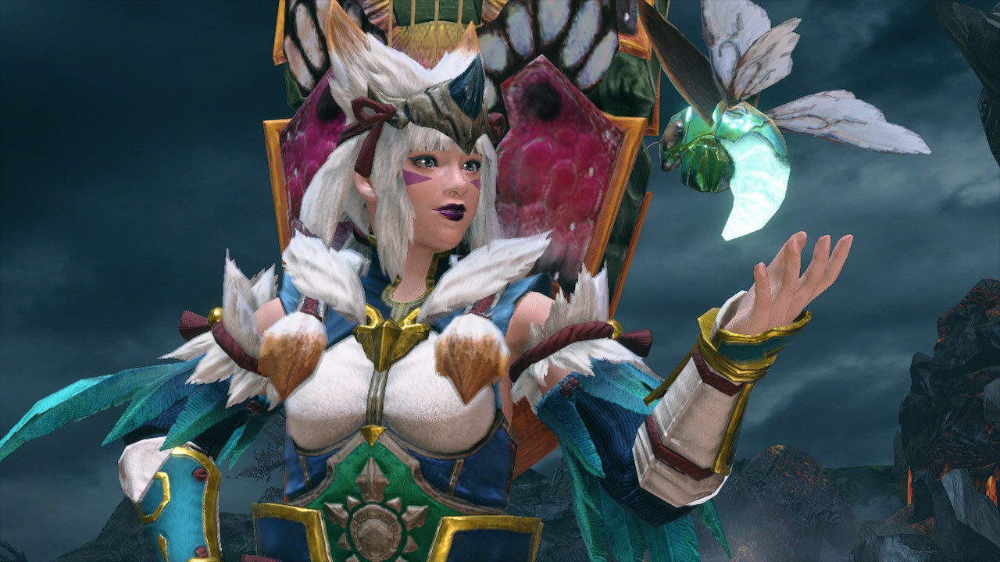

Monster Hunter® is a video game franchise created by Capcom that I’ve played versions of throughout my life. The newest version of the game, Monster Hunter Rise, was released on March 26th, 2021 for the Nintendo Switch. The premise of this version is to slay and capture monsters in order to protect the citizens of the village of Kamura. It has been on the charts as Japan’s best selling game for two months in a row, with 1.97 million copies sold at the price of ¥7,990 each.
Map of Kamura Village
MY CHARACTER

Rayylene, HR 2
With each upgraded version of Monster Hunter, character customization gets more and more intricate. It took me about 45 minutes to design my character, Rayylene, and her two “buddies,” Mushy the dog and Trout the cat. Once the character is designed, you can outfit yourself and your buddies with armor and weapons.
MY WEAPON
Hunting Horn: Vicello Nulo II White
Weapons (and armor) are acquired by hunting monsters to gather their parts, and through finding natural materials out in the field. There are [insert # here] types of weapons, but I have always used the hunting horn as my weapon of choice. It deals blunt damage and by playing certain notes (pressing certain buttons) in a particular order, it gives you and other players you are hunting with certain buffs. My current weapon, the Vicello Nulo, gives me Health regeneration, sonic boom, and [something else].
BUNNY DANGO
Palicoes and [lady’s name] Serving Bunny Dango
It is best practice to eat a meal of Bunny Dango before going out on each hunt. Eating will increase your health and stamina stats by 50pts, and each ball of dango you can choose from gives different buffs to your character. You pick a total of three, and my go-to dango choices are: [insert 3 favorite dango choices & what they do here]
THE MONSTERS
There are many monsters, big and small. The small monsters can be easily defeated, and are mainly slain to gather materials or complete side quests. In this section, I’ll be discussing some of the large monsters that really take time and skill to defeat.
This isn’t this monster’s first appearance in the Monster Hunter Franchise. I first encountered it in Monster Hunter 4 Ultimate on the Nintendo 3DS. It is a bunny-like creature that lives in the Frost Islands and its main attack is the belly slide. Because of its large ears, it is weak to loud sounds, so using sonic bombs will stun the monster, giving you a chance to attack!
I fought this monster so many times in order to craft my armor. A mix between a monkey and some type of bird, it can easily both fly and climb throughout its habitat in the Shrine Ruins. This monster likes to attack by throwing poison fruits at you, so make sure to have some antidotes on hand to heal yourself!
This is my favorite new monster of the series that I’ve encountered so far, and my buddies wear armor made from its parts. A majestic, pink water dragon that makes its home in the Flooded Forest. It creates large bubbles that will immobilize your character, so do your best to dodge them and keep a few cleansers in your item pouch to scrub the bubbles off if you do get hit!
This is the first boss monster to defeat in order to advance to the next difficulty level of monsters. He preys on other large monsters, and I died many times trying to defeat him. He expels hellfire gas when enraged which will cause you to burst into flames when you come in contact with it. Use a deodorant item or dodge roll to extinguish the flames!